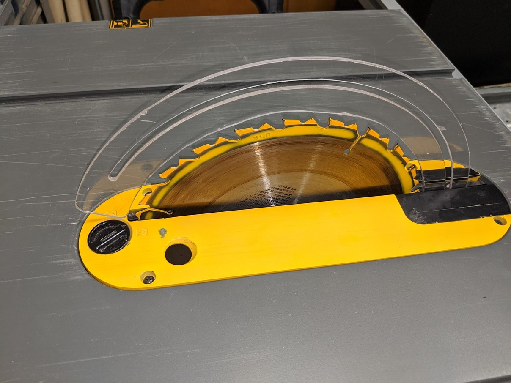
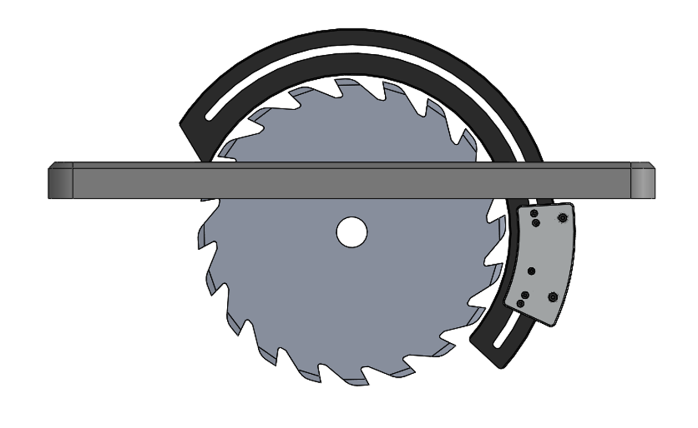

When I was a high school senior, I took a course named Project Lead the Way Engineering Design and Development, a sort of high school capstone class. In this class, we were tasked with identifying a problem and developing a product to solve that problem and potentially take to market.
My group developed the Riving Guard, a new kind of table saw guard/riving knife combination that would allow more flexibility in the types of cuts that can be made, compared to a standard table saw guard. We wanted to encourage more guard use, especially with contractors who might not be able to afford high-end saws that stop the blade once skin contact is detected.
While table saw guards are nothing new, we found through surveys and interviews of carpenters that many people don't like using them, since they can obstruct the user's view and restrict the types of cuts that can be made. Since most injuries happen when a guard is not used, we wanted to encourage guard use with our product, and we felt that a good way to do that was to address the issues people have with the standard guards.
The Riving Guard is a circular piece of thin titanium that provides a barrier between the user and the saw blade. The guard is mounted to some bearings that allow it to rotate on the axis of the saw blade. Stock that is sent towards the blade pushes the guard up, causing it to rotate out of the way, while still covering exposed parts of the blade and acting as a riving knife at the other side of the saw, ensuring that the cut pieces do not kick back at the user. Springs connecting the guard to the bearing mount ensure that the guard springs back into position after the stock is passed through.